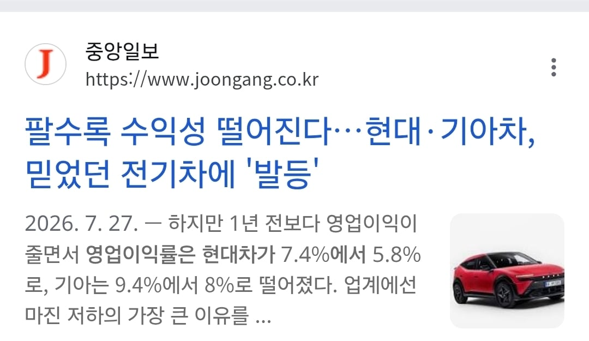
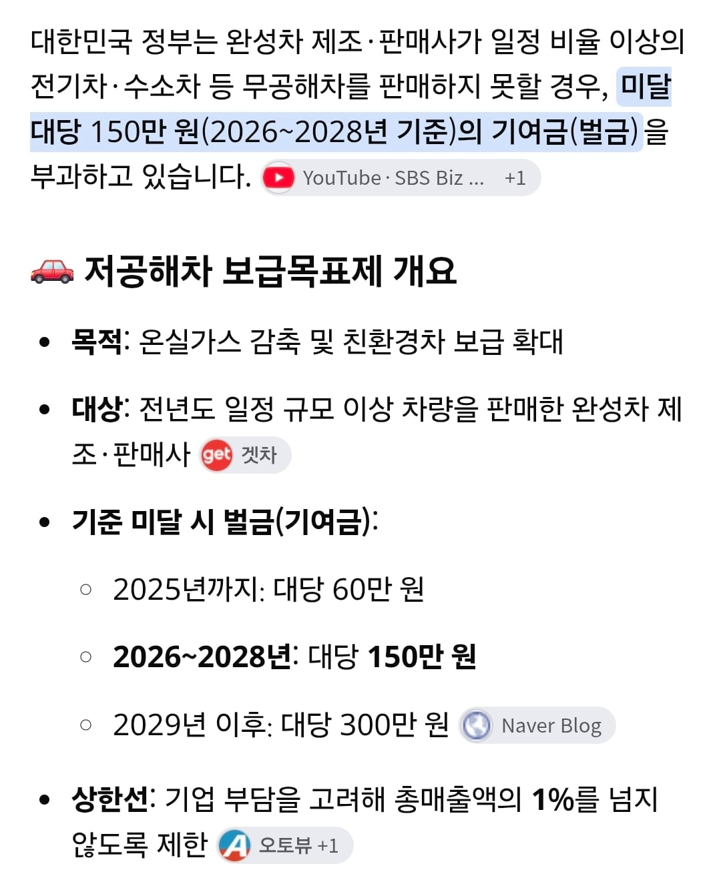

일정비율이상 판매 못하면 벌금이 존나 쎔


일정비율이상 판매 못하면 벌금이 존나 쎔
저거 수입차도 적용되나 그래서
수입차 전기차 가끔 할인 크게 들어오는 경우도 있긴 함
저 시기에 중국이랑 미국 유럽에서도 자국 자동차 기업 보호 대놓고 하고 해외 기업에 차별 존나 해서 지원 없으면 그냥 미국 중국 유럽에 존나 처맞는 거였는데 시간 지나니까 그냥 현기만 개새끼 되는구나..
원가상승 주범인 하청업체 설립은 어떻게 쉴드칠건데?ㅋㅋ
그거랑 지금 이슈랑 뭔 상관임.. 현기가 착한 기업이라 한 적 없음 욕 먹을 건 욕 먹어야 하는데 무지성 현까짓도 ㅈ같은 거지
보조금 뿌린지 몇년인데 다른기업들 다 주가 떡상할때 현기만 생산 적자라는게 현기가 개새끼라서가 아님?ㅋㅋㅋㅋ
아니 보조금 정책이랑 벌금 얘기하는데 주가랑 딴소리하면서 현기 까면 할 말이 없는데
현기가 착한 기업이라고 쉴드 치는 게 아니라니까?
적자라며 ㅋㅋㅋㅋㅋㅋㅋㅋ
주가상승은 수익이 기대되니까 상승하는거고 ㅋㅋ
난 적자라고 한 적 없는데.. 댓글 읽고 대댓 단 거 맞음?
근데 중국회사들 말고 다른 글로벌회사 중에 현기보다 싸게파는 곳이 있어? 예를 들어 투싼이다 하면 투싼보다 디자인 옵션 성능이 더 좋으면서 더 싸게파는곳
누가보면 현기는 모든부품이 메이드인코리아인줄ㅋㅋㅋ
난 부품이야기 한적이 없는디 뭔 하청업체니 하면서 인건비 때문에 가격상승한다고 해서 물어보는거임. 인건비때문에 가격상승이 안되는 다른글로벌회사들이랑 비교해서 현기차보다 싼데가 있냐고 물어본것뿐인데
적자 해소할 방법이 뻔히 보인다는 거죠 ㅋㅋㅋ 다른 글로벌회사들은 수익내잖아 가격 비싸서
이해가 안되는데
현기가 국내에서 백퍼 생산해서 해외로 다 수출하는것도 아니고
나라별로 거점 공장 만들어서 그 나라에서 판매하는 차량들은 같은 차종이라도 그 나라에서 파는게 더 비싼데
국내에서 제일 싸게 파는데 국내하청업체랑 노조때문에 적자니깐 국내걸로 적자해소하라니 이게 뭔 소리인가 싶네
예를 들어 현대 체코공장에서 생산되는 예전 투싼들도 유럽에서 판매되는데 6천만원대임.
그런데도 현기가 제일 쌈.
해외거점 공장도 뭔 현기만 노조랑 하청업체들때문에 차값이 높은건가?
기아은 상용차 전기차들 다 잘나와서 요즘 길거리에서 많이 보임
난 28년에 현대자율주행 활성화되면 그때사게
그건그렇고 PV5 겁나이쁘더라
아이오닉5 iccu 3번터지고도 정상판정 받고 내가 현기 전기차라면 학을뗀다 ㅋㅋㅋㅋ
정상입니다. 호갱님.
나 에바가루 날리는거 찍어서 보내도
몸에 이상없다고 ㅋㅋㅋ ㅅㅂ
세번째에 하이테크센터에서 정상판정 받고
나 이거 지금 중고차로 팔고 다른차 살거니까 정비한분이 정상이라고 했어요 못박고 나와서 바로 팔아버림 ㅋㅋㅋ
그래서 그런거였구나.. 만들고 싶지도 않은걸 억지로 만들게 하니까 그모양이지..
ev6 gt를 1000만원에 풀어라
급속 충전기 갈아치울 시간에 완속이나 더 깔았으면 좋겠음
나도 전기차 사고 싶어.. 내 주변의 충전 인프라가 너무 열악하다
차 가격도 보조금 없으면 너무 비싸고
그리고 현기차 한정, ICCU 문제도 있고
충전 인프라가 열악한데 전기차가 사고싶은 이유는 뭐야? 숭수 궁금
일단 내연차는 가만히 공회전 시키는게 부담인데, 전기차는 시동 켜놓고 차에서 마음대로 쉴 수 있는게 부럽더라고
주행질감도 전기차가 더 좋고
지금 이 상황에서 현대 기아 전기차가 사라지면 테슬라 전기차 가격이 상승할까요? 하강할까요? 우리나라와 경제력이 비슷한 일본 유럽의 전기차 가격을 보십시오. 가격이 우리보다 아주 비싸죠? 현대 기아 전기차가 비싸도 테슬라 가격 방어용으로라도 존재하면 좋은 이유입니다. 현대 기아의 전기차가 존재하고 그걸 사주는 고객들이 있으면 경쟁이 생겨서 테슬라 차주들은 싼값에 테슬라를 즐길 수 있거든요.
기업들이 경쟁하면 고객과 소비자들에겐 무조건 이득입니다.
휴대폰 시장에서 삼성이 사라지고
자동차 시장에서 현대 기아차가 사라진다 생각해보세요.
그러면 정말 소비자에게 행복한 시간이 그때부터 시작될까요?
일반인 기준
차 성능이고 나발이고 우선 예뻐야함
1. 예쁘네?
2. 가격 괜찮네?
3. 성능 괜찮네?
4. 실내공간 잘 뽑혔네?
사람마다 2-4번 순서는 다르겠지만
일단 예뻐야함
근데 ㅅㅂ 전기차를 무슨 망둥어로 뽑아내니..
ㄹㅇ 삼각떼, 메기 소나타 ...ㅋㅋㅋ
전기차 세단 걍 아이오닉V 한국 내주면 좋겠당
잉 맞네 반기는 연봉으로 환산 안하네;;